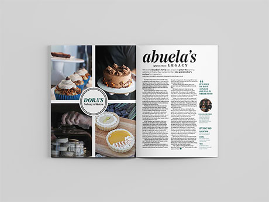

editorial design
I strive to make content easily digestible, aesthetically interesting and bold. Specializing in editorial design and art direction, my bread and butter are conceptional visuals, thoughtful typography, and purposeful hierarchy. I aim to elevate storytelling through visual communication and have ample experience working with the Adobe Creative Suite.
awards
Table of Contents design, third place, Columbia Scholastic Press Association 2018
Infographic design, third place, Columbia Scholastic Press Association 2018
Design Portfolio, third place, Columbia Scholastic Press Association 2018
selected work
